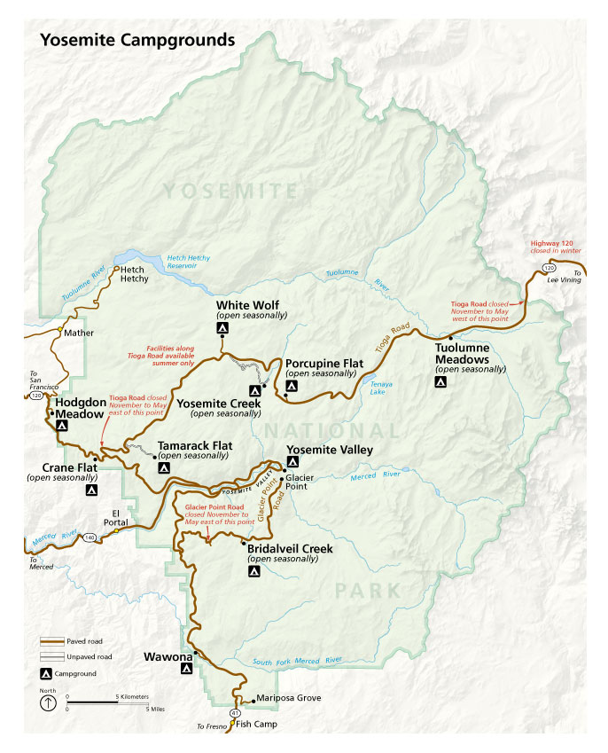
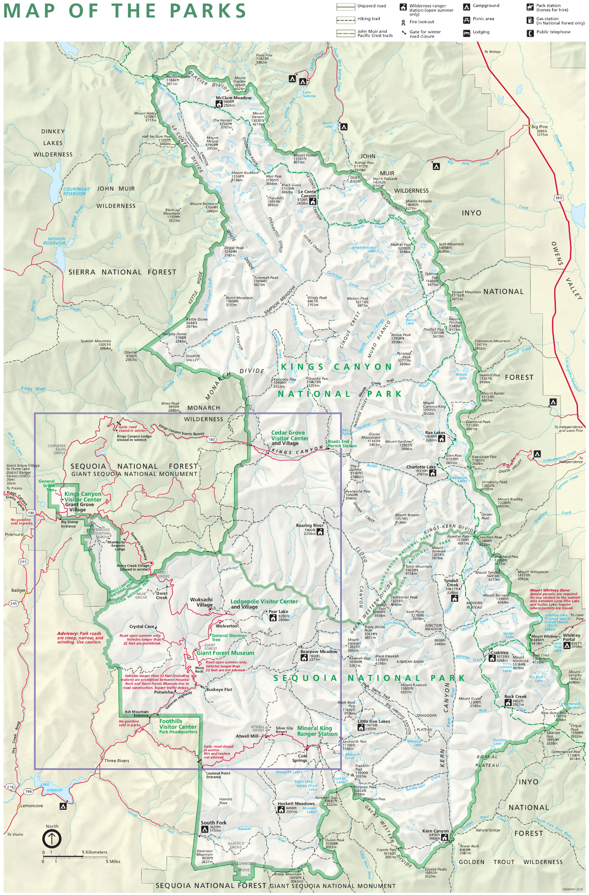
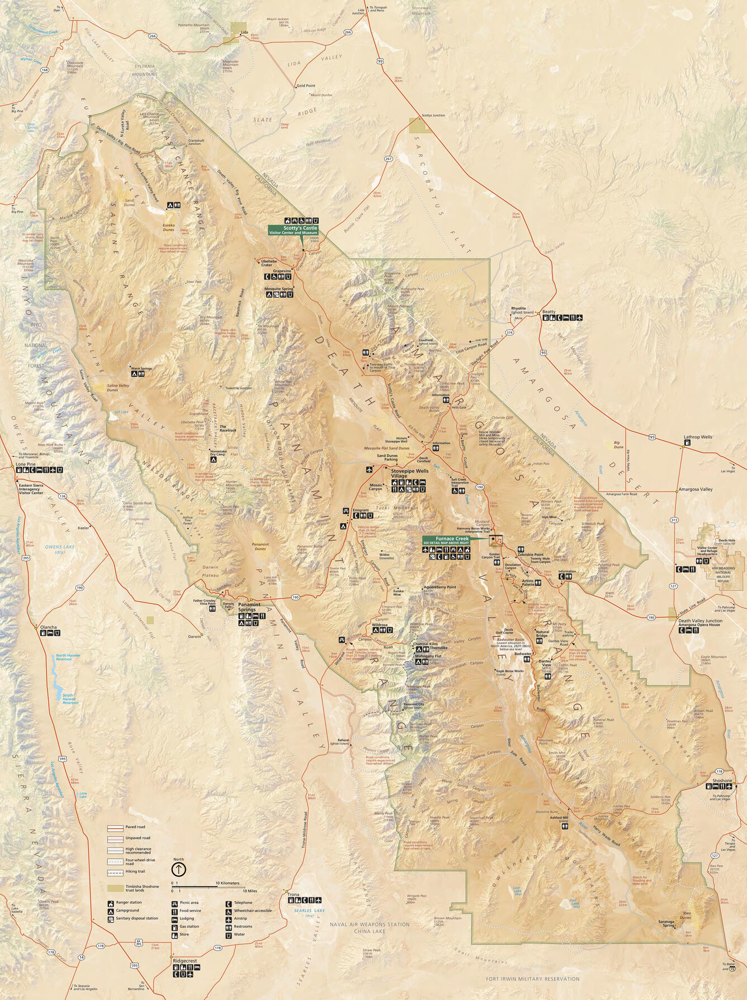

National Parks Maps
Explore detailed park maps for Yosemite, Sequoia and Kings Canyon, and Death Valley National Parks.

Yosemite Campgrounds
Find campgrounds, roads, and major locations throughout Yosemite National Park.
Open map →
Sequoia & Kings Canyon
Explore trails, visitor centers, roads, and wilderness areas in the southern Sierra Nevada.
Open map →
Death Valley
View roads, facilities, valleys, mountain ranges, and visitor locations across Death Valley.
Open map →